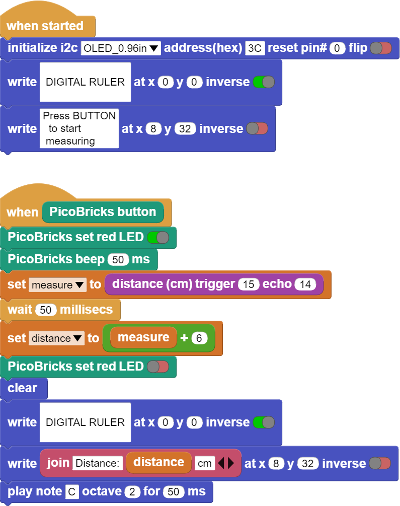

Digital Ruler¶
Introduction¶
In this project, you will learn how to receive and react to a command from the user in your projects by coding the button-LED module of Picobricks.
Project Details and Algorithm¶
As Newton explained in his laws of motion, a reaction occurs against every action. Electronic systems receive commands from users and perform their tasks. Usually a keypad, touch screen or a button is used for this job. Electronic devices respond verbally, in writing or visually to inform the user that their task is over and what is going on during the task. In addition to informing the user of these reactions, it can help to understand where the fault may be in a possible malfunction.
Different types of buttons are used in electronic systems. Locked buttons, push buttons, switched buttons… There is 1 push button on Picobricks. They work like a switch, they conduct current when pressed and do not conduct current when released. In the project, we will understand the pressing status by checking whether the button conducts current or not. If it is pressed, it will light the LED, if it is not pressed, we will turn off the LED.
Wiring Diagram¶

You can program and run Picobricks modules without any wiring. If you are going to use the modules by separating them from the board, then you should make the module connections with the Grove cables provided.
MicroPython Code of the Project¶
from machine import Pin, PWM, I2C
from utime import sleep
from picobricks import SSD1306_I2C
import utime
#define the libraries
redLed=Pin(7,Pin.OUT)
button=Pin(10,Pin.IN,Pin.PULL_DOWN)
buzzer=PWM(Pin(20,Pin.OUT))
buzzer.freq(392)
trigger = Pin(15, Pin.OUT)
echo = Pin(14, Pin.IN)
#define input and output pins
WIDTH = 128
HEIGHT = 64
#OLED screen settings
sda=machine.Pin(4)
scl=machine.Pin(5)
i2c=machine.I2C(0,sda=sda, scl=scl, freq=1000000)
#initialize digital pin 4 and 5 as an OUTPUT for OLED communication
oled = SSD1306_I2C(128, 64, i2c)
measure=0
finalDistance=0
def getDistance():
trigger.low()
utime.sleep_us(2)
trigger.high()
utime.sleep_us(5)
trigger.low()
while echo.value() == 0:
signaloff = utime.ticks_us()
while echo.value() == 1:
signalon = utime.ticks_us()
timepassed = signalon - signaloff
distance = (timepassed * 0.0343) / 2
return distance
#calculate the distance
def getMeasure(pin):
global measure
global finalDistance
redLed.value(1)
for i in range(20):
measure += getDistance()
sleep(0.05)
redLed.value(0)
finalDistance = (measure/20) + 1
oled.fill(0)
oled.show()
oled.text(">Digital Ruller<", 2,5)
oled.text("Distance " + str(round(finalDistance)) +" cm", 0, 32)
oled.show()
#print the specified distance to the specified x and y coordinates on the OLED screen
print(finalDistance)
buzzer.duty_u16(4000)
sleep(0.05)
buzzer.duty_u16(0)
measure=0
finalDistance=0
#sound the buzzer
button.irq(trigger=machine.Pin.IRQ_RISING, handler=getMeasure)
Truco
If you rename your code file to main.py, your code will run after every boot.
Arduino C Code of the Project¶
#include <Wire.h>
#include "ACROBOTIC_SSD1306.h"
#include <NewPing.h>
// define the libraries
#define TRIGGER_PIN 15
#define ECHO_PIN 14
#define MAX_DISTANCE 400
NewPing sonar(TRIGGER_PIN, ECHO_PIN, MAX_DISTANCE);
#define T_B 493
int distance = 0;
int total = 0;
void setup() {
pinMode(7,OUTPUT);
pinMode(20,OUTPUT);
pinMode(10,INPUT);
// define input and output pins
Wire.begin();
oled.init();
oled.clearDisplay();
}
void loop() {
delay(50);
if(digitalRead(10) == 1){
int measure=0;
digitalWrite(7,HIGH);
tone(20,T_B);
delay(500);
noTone(20);
for (int i=0;i<20;i++){
measure=sonar.ping_cm();
total=total+measure;
delay(50);
}
distance = total/20+6; // calculate the distance
digitalWrite(7,LOW);
delay(1000);
oled.clearDisplay();
oled.setTextXY(2,1);
oled.putString(">Digital Ruler<");
oled.setTextXY(5,1);
oled.putString("Distance: ");
oled.setTextXY(5,10);
String string_distance=String(distance);
oled.putString(string_distance);
oled.setTextXY(5,12);
oled.putString("cm"); // print the calculated distance on the OLED screen
measure=0;
distance=0;
total=0;
}
}
Coding the Project with MicroBlocks¶
 |
Nota
To code with MicroBlocks, simply drag and drop the image above to the MicroBlocks Run tab.